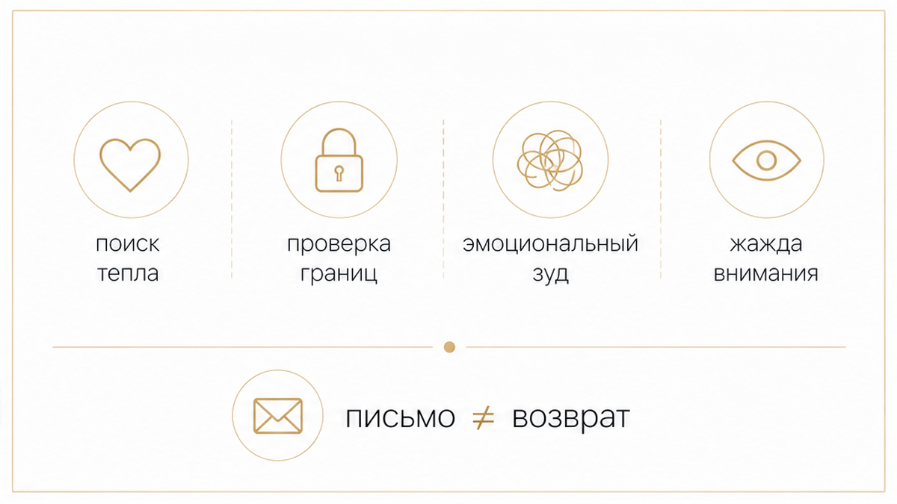
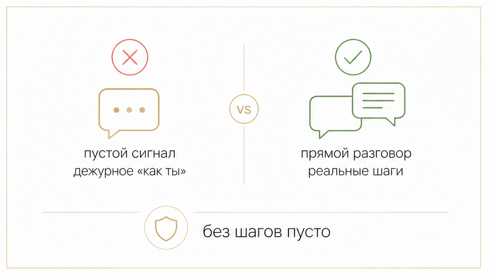
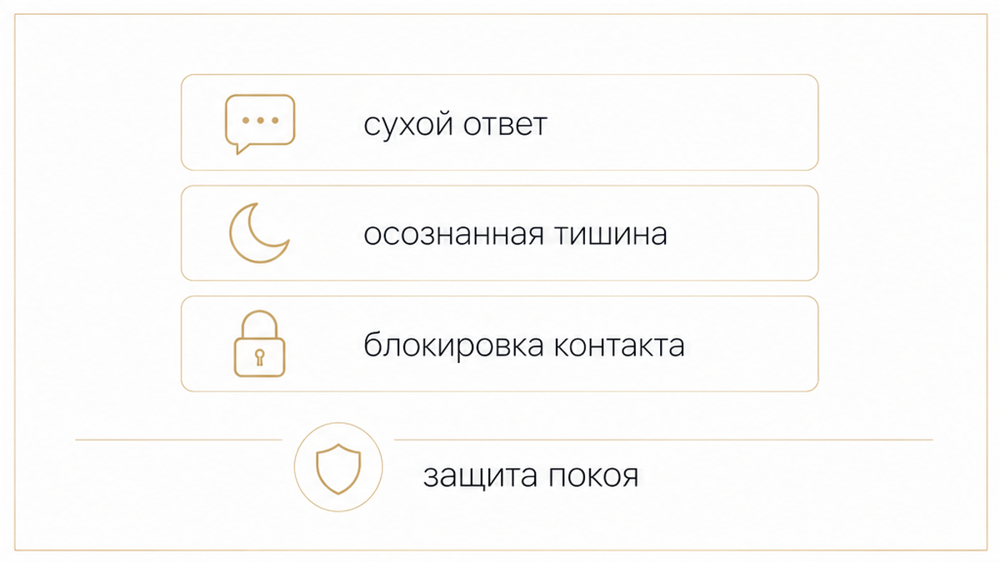

Экран смартфона загорается ближе к полуночи: короткое «Привет, как ты?» или дежурное «Спишь?». Имя на экране мгновенно выбивает почву из-под ног, хотя точка в отношениях уже поставлена. Вы разъехались, не строите общих планов и вроде бы заново собрали свой привычный быт. Но одно внезапное уведомление заставляет пальцы замереть над экраном, а сердце — пропустить удар.
Первая мысль — лихорадочно искать скрытый смысл: неужели одумался, понял свою ошибку и готов всё вернуть? Но внезапный выход на связь после расставания почти никогда не связан с желанием начать всё с чистого листа. Чаще всего за этим стоит сиюминутный импульс самого пишущего, которому стало пусто, скучно или тревожно в его собственном вечере.
Сразу к делу: карты не залезают в чужую голову и не дают ложных обещаний о сказочном возвращении. Их задача — трезво подсветить скрытые мотивы человека, показать расстановку сил и помочь тебе сохранить душевный покой.
Выбирай удобный формат, чтобы разложить ситуацию по полочкам:

Когда отношения закончились, любой контакт со стороны бывшего партнёра подсознательно считывается как шаг к примирению. Но если снять розовые очки, психологическая подоплёка таких писем оказывается куда более приземлённой.
В таро подобные ностальгические импульсы описывает Шестёрка Кубков. Эта карта несёт тёплый шлейф воспоминаний, но оглянуться назад — не значит вернуться. Иногда прошлое стучится в дверь лишь для того, чтобы ты увидела, какой огромный путь уже прошла и как далеко ушла от прежней точки боли.

Внезапные сообщения прилетают стремительно — в таро эта взрывная динамика созвучна связке Восьмёрки Жезлов и карты Суд. Тишина внезапно взрывается коротким «Привет», но скорость отправки сообщения никогда не равна серьёзности намерений. Важно чётко разделять два принципиально разных типа контакта:
Если в сообщении нет конкретных шагов и твёрдого намерения, не строй воздушных замков на пустом месте. Мужчины часто пишут бывшим не ради второго шанса, а ради ответа, которого сами не смогли сформулировать или получить в момент расставания.

Главный ориентир в такой ситуации — твоё собственное душевное состояние, а не попытка угадать настроение бывшего. Реагировать на его сигнал стоит строго исходя из твоих личных границ и ресурса:
Когда ты перестаёшь обслуживать чужие импульсы и выбираешь себя, возвращается состояние ясности и внутренней силы — как в аркане Солнце. Твой фокус смещается с чужих мотивов на собственную жизнь, и случайное сообщение на экране больше не способно сломать твой вечер.
Внезапная весточка из прошлого не должна выбивать почву у тебя из-под ног и отнимать накопленный покой. Если слова в чате поселили тревогу и мешают услышать собственный голос, карты помогут увидеть расстановку сил без иллюзий и принять спокойное, трезвое решение.
Выбирай удобный инструмент, чтобы вернуть себе душевное равновесие: